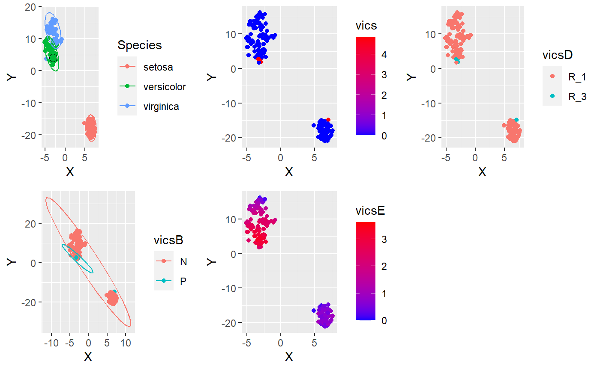

Cluster-Analysis.rmdIn this vignette, we are evaluating neighborhood-search, network-centralities and vicinities using Bayesian estimators as implemented in mmb.
Using some gradient-coloring:
library(mmb)
library(Rtsne)
#> Warning: package 'Rtsne' was built under R version 3.6.3
library(ggplot2)
library(ggpubr)
#> Warning: package 'ggpubr' was built under R version 3.6.3
#> Loading required package: magrittr
set.seed(1)
chooseSample <- 1
df <- iris[sample(rownames(iris)), ]
#df <- iris[,]
tsne <- Rtsne::Rtsne(df[, 1:4], check_duplicates = FALSE)
# Attach:
df$X <- tsne$Y[, 1]
df$Y <- tsne$Y[, 2]
# Let's pick one sample to calculate the vicinity for:
s <- df[chooseSample, 1:4]
vics <- mmb::vicinitiesForSample(doEcdf = FALSE, shiftAmount = 1,
df = df[, 1:4], sampleFromDf = s, selectedFeatureNames = colnames(s),
retainMinValues = 5)
#> Warning in value[[3L]](cond): Density estimation failed: Error in bw.SJ(x, method = "ste"): sample is too sparse to find TD
# Attach to df:
df$vics <- vics$vicinity
# TEMP TEMP TEMP: Discretize vics
mmbd <- mmb::discretizeVariableToRanges(df$vics, numRanges = length(levels(df$Species)))
df$vicsD <- sapply(df$vics, function(v) {
for (i in 1:length(mmbd)) {
r <- mmbd[[i]]
if (v >= r[1] && v < r[2]) return(paste("R", i, sep = "_"))
}
})
# Also, create a binary classification:
df$vicsB <- sapply(df$vics, function(v) {
return(if (v > 0.1) "P" else "N")
})
# Additionally, compute the Euclidean-distance:
df$vicsE <- as.vector(philentropy::distance(df[, 1:4])[1,])
#> Metric: 'euclidean'; comparing: 150 vectors.
df$vicsE <- max(df$vicsE) - df$vicsE
pointCommon <- geom_point(shape=1, size=3, color="#000000", data=df[chooseSample,], mapping=aes(x=df[chooseSample,]$X, y=df[chooseSample,]$Y))
g1 <- ggplot(df, aes(x=X, y=Y, color=Species)) +
geom_point() +
pointCommon +
stat_ellipse()
g2 <- ggplot(df, aes(x=X, y=Y)) +
geom_point(aes(color=vics)) +
#stat_ellipse() +
scale_color_gradient(low="blue", high="red")
# TEMP TEMP TEMP
g3 <- ggplot(df, aes(x=X, y=Y, color=vicsD)) +
geom_point() #+
#stat_ellipse()
g4 <- ggplot(df, aes(x=X, y=Y, color=vicsB)) +
geom_point() +
stat_ellipse()
g5 <- ggplot(df, aes(x=X, y=Y)) +
geom_point(aes(color=vicsE)) +
#stat_ellipse() +
scale_color_gradient(low="blue", high="red")
ggarrange(g1, g2, g3, g4, g5)
#> Warning in MASS::cov.trob(data[, vars]): Probable convergence failure